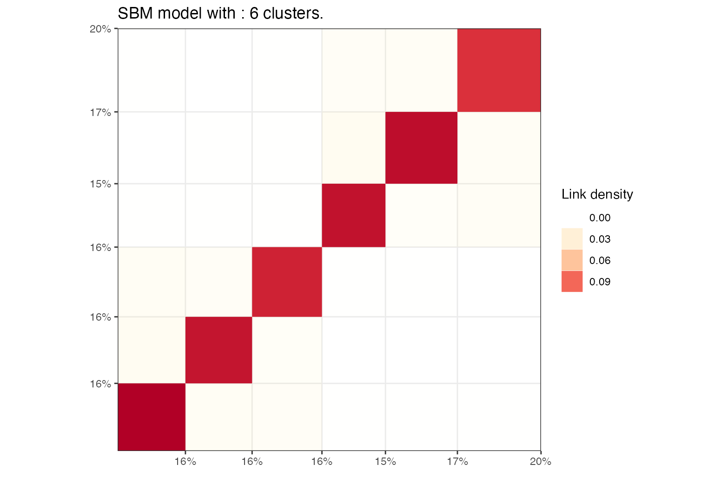
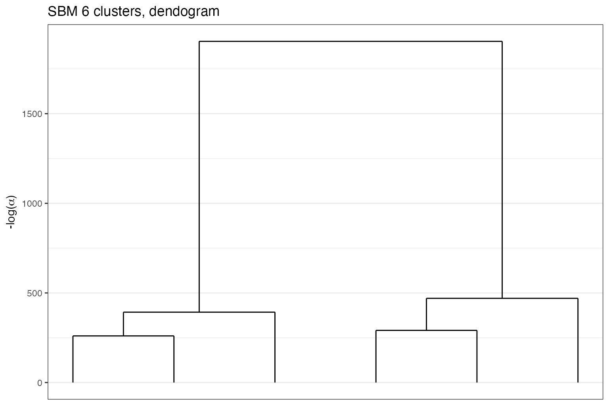
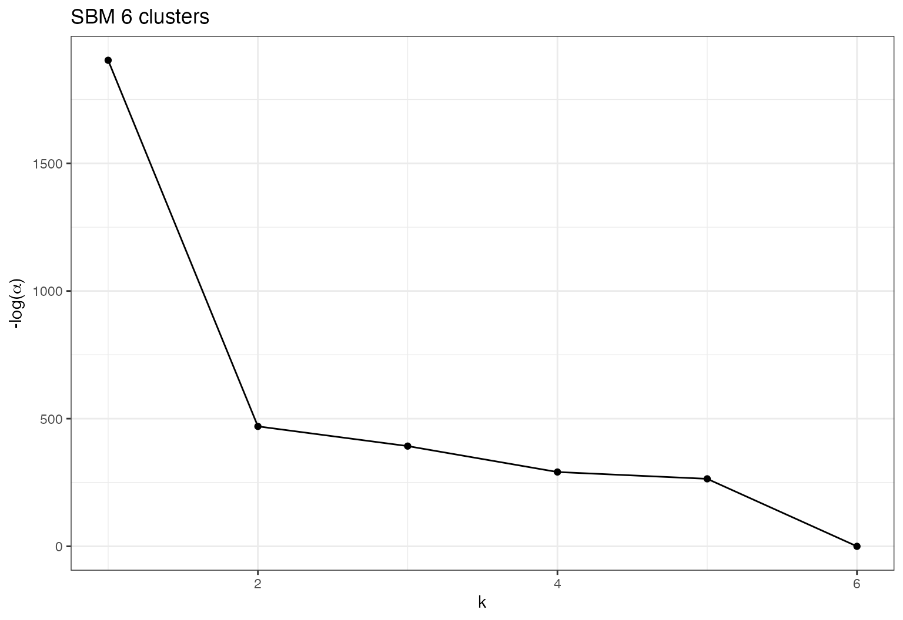
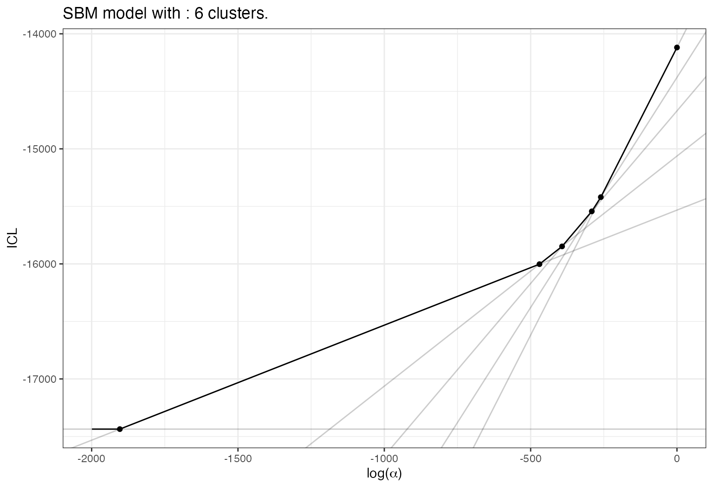
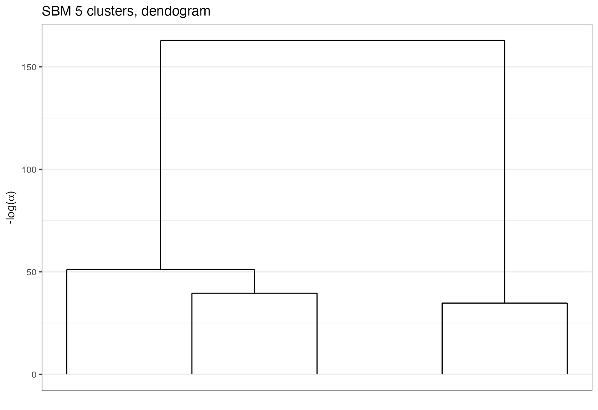
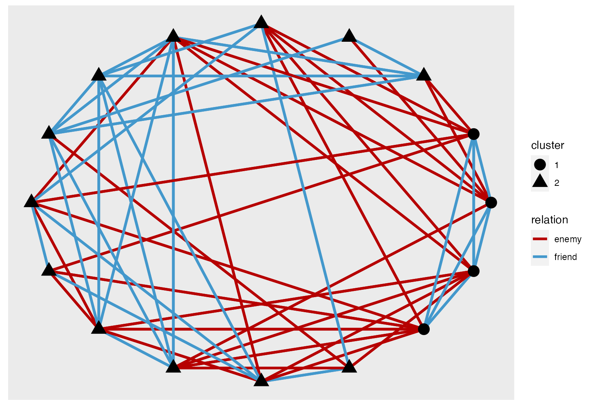

Loads packages and set a future plan for parallel processing if you want.
Basic example
Simulation of an SBM graph with a hierarchical structure.
N=400
K=6
pi=rep(1/K,K)
lambda = 0.1
lambda_o = 0.01
Ks=3
mu = bdiag(lapply(1:(K/Ks), function(k){
matrix(lambda_o,Ks,Ks)+diag(rep(lambda,Ks))}))+0.001
sbm = rsbm(N,pi,mu)Perform the clustering with default algorithm. We specify to choose an sbm model since for squared sparse matrix the default is a DcSbm model. An hybrid algorithm is selected by default and the default value for the parameter K is 20.
sol = greed(sbm$x,model = Sbm())
#> ------- guess SBM model fitting ------
#> ################# Generation 1: best solution with an ICL of -14291 and 7 clusters #################
#> ################# Generation 2: best solution with an ICL of -14241 and 6 clusters #################
#> ################# Generation 3: best solution with an ICL of -14241 and 6 clusters #################
#> ------- Final clustering -------
#> ICL clustering with a SBM model, 6 clusters and an icl of -14241.Look at the parameters estimate:
coef(sol)
#> $pi
#> [1] 0.1775 0.1500 0.1375 0.1800 0.1700 0.1850
#>
#> $thetakl
#> [,1] [,2] [,3] [,4] [,5]
#> [1,] 0.1170402698 0.0089201878 0.0087067862 0.0009780908 0.0010356255
#> [2,] 0.0131455399 0.1188888889 0.0060606061 0.0006944444 0.0004901961
#> [3,] 0.0117797695 0.0133333333 0.1028099174 0.0007575758 0.0013368984
#> [4,] 0.0005868545 0.0002314815 0.0007575758 0.1091820988 0.0130718954
#> [5,] 0.0012427506 0.0009803922 0.0008021390 0.0114379085 0.1161332180
#> [6,] 0.0017129806 0.0006756757 0.0007371007 0.0090090090 0.0111287758
#> [,6]
#> [1,] 0.0011419871
#> [2,] 0.0009009009
#> [3,] 0.0009828010
#> [4,] 0.0112612613
#> [5,] 0.0135135135
#> [6,] 0.1112125639Plot the results using a block representation.
plot(sol,type='blocks')
Plot the results with a node link diagram.
plot(sol,type='nodelink')Or a dendrogram for selecting a smaller value for K.
plot(sol,type='tree')
Eventually study the evolution of \(-log(\alpha)\) with respect to \(K\).
plot(sol,type='path')
Or of ICL with respect to \(log(\alpha)\)
plot(sol,type='front')
And select a smaller value to extract a new solution.

We may try with a dcsbm simulation and compare models with and without degree correction:
sim_dcsbm <- rdcsbm(N,pi,mu,round(rexp(N,1/15)),round(rexp(N,1/15)))
X <- sim_dcsbm$x
X[X>1] <- 1
sol_dcsbm <- greed(X,model = DcSbm())
#> ------- guess DCSBM model fitting ------
#> ################# Generation 1: best solution with an ICL of -11402 and 6 clusters #################
#> ################# Generation 2: best solution with an ICL of -11402 and 6 clusters #################
#> ------- Final clustering -------
#> ICL clustering with a DCSBM model, 6 clusters and an icl of -11402.
sol_dcsbm
#> ICL clustering with a DCSBM model, 6 clusters and an icl of -11402.
sol_sbm <- greed(X,model = Sbm())
#> ------- guess SBM model fitting ------
#> ################# Generation 1: best solution with an ICL of -12633 and 13 clusters #################
#> ################# Generation 2: best solution with an ICL of -12454 and 11 clusters #################
#> ################# Generation 3: best solution with an ICL of -12373 and 11 clusters #################
#> ################# Generation 4: best solution with an ICL of -12353 and 11 clusters #################
#> ################# Generation 5: best solution with an ICL of -12351 and 11 clusters #################
#> ################# Generation 6: best solution with an ICL of -12350 and 11 clusters #################
#> ################# Generation 7: best solution with an ICL of -12350 and 11 clusters #################
#> ------- Final clustering -------
#> ICL clustering with a SBM model, 11 clusters and an icl of -12350.
sol_sbm
#> ICL clustering with a SBM model, 11 clusters and an icl of -12350.As expected the degree corrected version did a better job as the ICL’s suggest. Without degree correction the model has to use more groups to fit the degree heterogeneity.
Some simple real data, the books dataset
data(Books)
sol_dcsbm = greed(Books$X,model = DcSbm())
#> ------- guess DCSBM model fitting ------
#> ################# Generation 1: best solution with an ICL of -1353 and 5 clusters #################
#> ################# Generation 2: best solution with an ICL of -1346 and 4 clusters #################
#> ################# Generation 3: best solution with an ICL of -1346 and 4 clusters #################
#> ------- Final clustering -------
#> ICL clustering with a DCSBM model, 3 clusters and an icl of -1345.
sol_dcsbm
#> ICL clustering with a DCSBM model, 3 clusters and an icl of -1345.
sol_sbm = greed(Books$X,model = Sbm())
#> ------- guess SBM model fitting ------
#> ################# Generation 1: best solution with an ICL of -1272 and 6 clusters #################
#> ################# Generation 2: best solution with an ICL of -1256 and 7 clusters #################
#> ################# Generation 3: best solution with an ICL of -1254 and 6 clusters #################
#> ################# Generation 4: best solution with an ICL of -1254 and 6 clusters #################
#> ------- Final clustering -------
#> ICL clustering with a SBM model, 5 clusters and an icl of -1253.
sol_sbm
#> ICL clustering with a SBM model, 5 clusters and an icl of -1253.The network as been well recognized as an undirected graph. We may look at the fitted model prior to check:
prior(sol_dcsbm)
#> An object of class "DcSbm"
#> Slot "alpha":
#> [1] 1
#>
#> Slot "type":
#> [1] "undirected"
#>
#> Slot "p":
#> [1] 0.08For this dataset the model without degree correction seem’s to reach a better solution than its concurrent.
bl_sbm = plot(sol_sbm,type='blocks')
bl_dcsbm = plot(sol_dcsbm,type='blocks')
ggarrange(bl_sbm,bl_dcsbm)
plot(sol_sbm,type='tree')
library(ggraph)
library(tidygraph)
#>
#> Attaching package: 'tidygraph'
#> The following object is masked from 'package:stats':
#>
#> filter
graph <- igraph::graph_from_adjacency_matrix(Books$X) %>% as_tbl_graph() %>%
mutate(Popularity = centrality_degree()) %>%
activate(nodes) %>%
mutate(cluster=factor(clustering(sol_sbm),1:K(sol_sbm)))
# plot using ggraph
ggraph(graph, layout = 'kk') +
geom_edge_link() +
geom_node_point(aes(size = Popularity,color=cluster))
sol_sbm_k3 = cut(sol_sbm,3)
table(clustering(sol_sbm_k3),Books$label)
#>
#> c l n
#> 1 1 38 2
#> 2 7 5 8
#> 3 41 0 3Multinomial SBM, layered networks
Newguinea dataset
sol_newguinea = greed(NewGuinea,model=MultSbm())
#> ------- guess MULTSBM model fitting ------
#> ################# Generation 1: best solution with an ICL of -127 and 3 clusters #################
#> ################# Generation 2: best solution with an ICL of -127 and 3 clusters #################
#> ################# Generation 3: best solution with an ICL of -127 and 3 clusters #################
#> ------- Final clustering -------
#> ICL clustering with a MULTSBM model, 2 clusters and an icl of -123.
plot(sol_newguinea,type='blocks')
enemies = as.data.frame(which(NewGuinea[,,1]==1,arr.ind = TRUE)) %>%
mutate(relation="enemy")
friends = as.data.frame(which(NewGuinea[,,2]==1,arr.ind = TRUE)) %>%
mutate(relation="friend")
edges = rbind(enemies,friends)
graph = tbl_graph(edges=edges,nodes=data.frame(id=1:16,cluster=factor(clustering(sol_newguinea))))
# plot using ggraph
ggraph(graph, layout = 'kk', weights = if_else(relation=="friends",1,0)) +
geom_edge_link(aes(color=relation),width=1.2) +
scale_edge_color_manual(values = c("friend"="#229922","enemy"="#992222"))+
geom_node_point(aes(shape=cluster),size=5)
mod <- MixedModels(list(pos = DcSbmPrior(), neg = DcSbmPrior()))
data <- list(pos = NewGuinea[, , 2], neg = NewGuinea[, , 1])
sol_bidcsbm <- greed(data, model = mod, K = 5)
#> ------- MIXEDMODELS model fitting ------
#> ################# Generation 1: best solution with an ICL of -151 and 2 clusters #################
#> ################# Generation 2: best solution with an ICL of -151 and 2 clusters #################
#> ------- Final clustering -------
#> ICL clustering with a MIXEDMODELS model, 2 clusters and an icl of -151.
bl_pos = plot(extractSubModel(sol_bidcsbm,"pos"),type="blocks")
bl_neg = plot(extractSubModel(sol_bidcsbm,"neg"),type="blocks")
ggarrange(bl_pos,bl_neg)7th grade dataset
mod <- MixedModels(list(class = DcSbmPrior(), friends = DcSbmPrior(), work = DcSbmPrior()))
data <- list(class = SevenGraders[, , 1], friends = SevenGraders[, , 2], work = SevenGraders[, , 3])
sol <- greed(data, model = mod, K = 5)
#> ------- MIXEDMODELS model fitting ------
#> ################# Generation 1: best solution with an ICL of -1514 and 4 clusters #################
#> ################# Generation 2: best solution with an ICL of -1514 and 4 clusters #################
#> ------- Final clustering -------
#> ICL clustering with a MIXEDMODELS model, 4 clusters and an icl of -1514.
plot(extractSubModel(sol, "work"), type = "blocks")